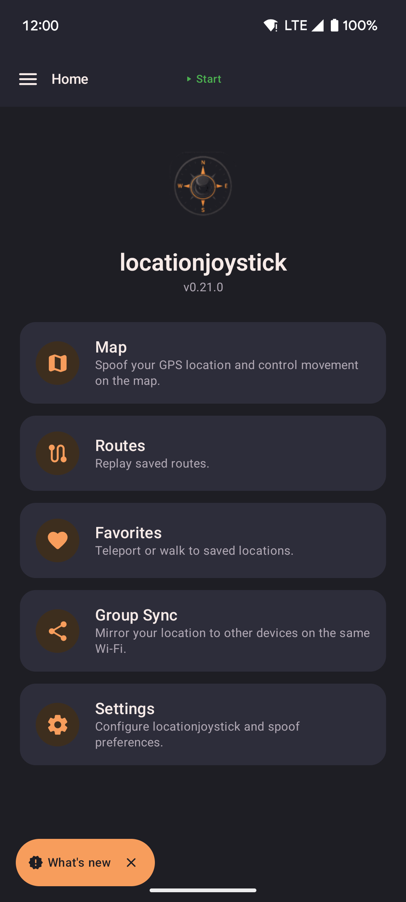

locationjoystick
Change the location your phone reports. Move a floating joystick, play a saved route, or let the app wander for you. Your other apps see the new location.
The app uses a location setting built into Android. Turn on Developer Options and pick locationjoystick as the mock location app. Every app on your phone then sees the position you choose.

- The Home screen links to every part of the app: Map, Routes, Favorites, Capture, Group Sync, and Settings.
- The button at the top starts and stops spoofing from any screen. When spoofing is off, it names the place you will start from.
Install
- Download the latest APK from GitHub Releases.
- Open the downloaded file. If Android asks you to "Allow installs from unknown sources", turn it on for your browser or file manager, then try again.
- Google Play Protect may show "App scan recommended". It appears for any app installed outside the Play Store. Tap Install without scanning, or scan first.
First-run setup
The first time you open the app, it guides you through the setup below.
-
Location permission
Grant Precise location. The map uses it to center on you, and route recording needs it.
-
Overlay permission
Grant Display over other apps for the floating joystick and widget. The app opens the settings page. Turn on locationjoystick in the list, then go back to the app.
-
Mock location provider
First, turn on Developer Options: go to Settings → About phone and tap Build number seven times. Then go to Settings → Developer Options → Select mock location app and choose locationjoystick. Tap Check again in the app. It moves on when the setting is correct.
-
Compass orientation (optional)
Tap to Walk can read your game's compass so each tap walks the right way. It uses Android's Accessibility permission. Tap Review and turn on to see what it reads. Nothing leaves your phone. Tap Accept, then turn on locationjoystick compass in Android's Accessibility settings. Or tap Decline to skip it. Everything else works without it.
-
All done
Setup ends and the Map screen opens. You see setup again only if you clear the app's data.
Start changing your location
Tap Map, tap the start button, then long-press the map to walk or teleport there. Use the floating widget or joystick to control your location from other apps.
Updating
Open the new APK file. Android asks "Replace app?". Your data stays.
Switching from the Play Store version
Android cannot update directly between the Play Store version and the GitHub version. To switch:
- Export your data: Settings → Export.
- Uninstall the Play Store version.
- Install the GitHub APK.
- Import your data.
Home screen badges
Update available. When GitHub has a newer release, a badge such as v1.2.3 available appears on the Home screen. The app checks about once a day and needs internet. Tap the badge to open the release page. Tap X to hide it. The badge stays hidden until a newer version comes out. You cannot turn the check off.
What's new. After an update, a second badge shows what changed. Tap it to read the new features and fixes. It works offline. Tap X to dismiss it until the next version. See the changelog for the full history.
Source
github.com/shortcuts/locationjoystick. Free, open source, under the MIT license.
See Acknowledgements for the open-source projects and data sources the app uses.